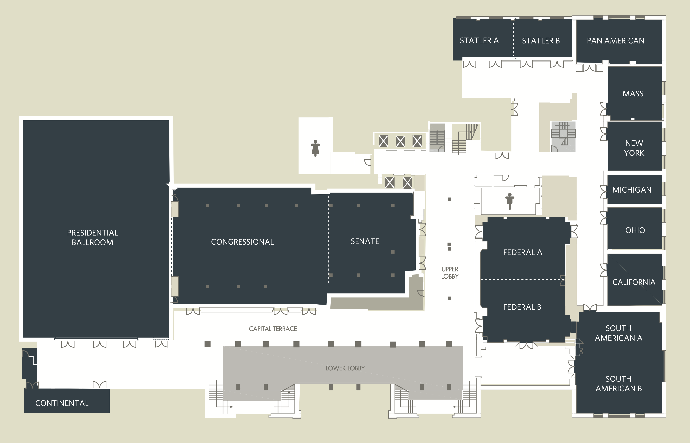

Capital Hilton Floor Plan(second floor)
{kind=link}
Every day:
- 8:00 AM - 6:00 PM : SIGIR Registration - Capital Terrace/Foyers
- 8:00 AM - 8:30 PM : Quiet Room / Prayer Room - Executive Lounge
Sunday, July 14th, 2024
| Federal A | Federal B | South American A | South American B | Statler A & B | Massachusetts | Ohio | |
|---|---|---|---|---|---|---|---|
| 9:00 AM - 10:30 AM | Doctoral Consortium | Large Language Model Powered Agents for Information Retrieval | Large Language Models for Tabular Data: Progresses and Future Directions | Recent Advances in Generative Information Retrieval | Large Language Models for Recommendation: Past, Present, and Future | Search under Uncertainty: Cognitive Biases and Heuristics | High Recall Retrieval Via Technology-Assisted Review |
| 10:30 AM - 11:00 AM | Coffee Break | ||||||
| 11:00 AM - 12:30 PM | Doctoral Consortium | Large Language Model Powered Agents for Information Retrieval | Large Language Models for Tabular Data: Progresses and Future Directions | Recent Advances in Generative Information Retrieval | Large Language Models for Recommendation: Past, Present, and Future | Search under Uncertainty: Cognitive Biases and Heuristics | High Recall Retrieval Via Technology-Assisted Review |
| 12:30 PM - 1:30 PM | Doctoral Consortium Lunch provided | ||||||
| 1:30 PM - 3:00 PM | Doctoral Consortium | Empowering Large Language Models: Tool Learning for Real-World Interaction | Robust Information Retrieval | Preventing and Detecting Misinformation Generated by Large Language Models | Using and Evaluating Quantum Computing for Information Retrieval and Recommender Systems | Search under Uncertainty: Cognitive Biases and Heuristics | High Recall Retrieval Via Technology-Assisted Review |
| 3:00 PM - 3:30 PM | Doctoral Consortium Lunch provided | ||||||
| 3:30 PM - 5:00 PM | Doctoral Consortium | Empowering Large Language Models: Tool Learning for Real-World Interaction | Robust Information Retrieval | Preventing and Detecting Misinformation Generated by Large Language Models | Using and Evaluating Quantum Computing for Information Retrieval and Recommender Systems | Search under Uncertainty: Cognitive Biases and Heuristics | High Recall Retrieval Via Technology-Assisted Review |
Monday, July 15th, 2024
Tuesday, July 16th, 2024
| Time | Presidential Ballroom | Congressional Ballroom | Senate | Federal A | Federal B | South American B | Statler A & B |
|---|---|---|---|---|---|---|---|
| 9:00 AM - 10:00 AM |
Keynote #3: Towards Steerable AI Systems Thorsten Joachims |
||||||
| 10:00 AM - 10:30 AM | Coffee Break | ||||||
| 10:30 AM - 12:30 PM | LLM Day | SIGIR T1.1 Explainability in Search and Recommendation | SIGIR T1.2 Domain specific | SIGIR T1.3 CTR, Ads & Click Models | SIGIR T1.4 Graphs and RecSys 2 | ||
| 12:30 PM - 1:30 PM | |||||||
| 1:30 PM - 3:00 PM | LLM Day | SIGIR T2.1 Dense Retrieval 1 | SIGIR T2.2 Diffusion in RecSys | SIGIR T2.5 Prompts, Instructions and LLMs in Recommender Systems | SIGIR T2.3 Neural IR | SIGIR T2.4 POI Recommendation | |
| 3:00 PM - 3:30 PM | Coffee Break | ||||||
| LLM Day | SIGIR T3.1 Fairness | SIGIR T3.2 Sequential Recommendation | SIGIR T3.3 Networks & Graphs | SIGIR T3.4 Privacy, Security and Federated Learning | |||
Wednesday, July 17th, 2024
| Time | President-ial Ballroom | Congres-sional Ballroom | Senate | Federal A & B | South American A | South American B | Statler A & B & Pan American | Massachu-setts | New York | Ohio | California |
|---|---|---|---|---|---|---|---|---|---|---|---|
| 9:00 - 10:00 AM |
Keynote #4: The Trajectory of Information Retrieval Michael Littman |
||||||||||
| 10:00 - 10:30 AM | Break | ||||||||||
| 10:30 AM - 12:30 PM | Govern-ment Day | SIGIR W1.1 Dense Retrieval 2 | SIGIR W1.2 Long-term & Session Recom-mendation | SIGIR W1.3 Evaluation with and for LLMs | SIRIP | SIGIR W1.4 Question Answering and Summaris-ation | SIGIR W1.5 Cross-Domain Recom-mendation | SIGIR W1.6 Multimedia 2 | SIGIR W1.7 Legal | ||
| 12:30 - 2:00 PM | SIGIR Business Lunch | ||||||||||
| 2:00 - 5:30 PM | Govern-ment Day | Posters + Demo Session (Demos in Foyers) Coffee at 2:00pm Cookies at 3:30pm |
SIRIP | ||||||||
| 5:30-6:00 PM | SIGIR Closing | ||||||||||
Thursday, July 18th, 2024
| Time | Presid-ential Ballroom | Congres-sional Ballroom & Senate | Federal A | Federal B | South American A | South American B | Statler A | Statler B | Pan American | Massa-chusetts | New York | Ohio | Califor-nia |
|---|---|---|---|---|---|---|---|---|---|---|---|---|---|
| 9:00 AM - 12:30 PM | Information Retrieval's Role in RAG Systems (IR-RAG) | Large Language Model for Evaluation in IR (LLM4Eval) | The Second Workshop on Large Language Models for Individuals, Groups, and Society (LLM-IGS-II) | The 1st Workshop on Multimodal Represent-ation and Retrieval (MRR 2024) | The Second Workshop on Generative Information Retrieval (Gen-IR@ SIGIR24) | International Workshop on Algorithmic Bias in Search and Recom-mendation (BIAS 2024) | Third Workshop on Personaliz-ation and Recom-mendations in Search (PaRiS) | Reaching Efficiency in Neural Information Retrieval (ReNeuIR) | The Fifth Workshop on Patent Text Mining and Semantic Techno-logies (PatentSem Tech2024) | SIGIR 2024 Workshop on Simulations for Information Access (Sim4IA@ SIGIR 2024) | The First Workshop on Agent-based Information Retrieval (AgentIR) | The 2024 SIGIR Workshop on eCommerce (eCom24) | |
| 12:30 - 1:30 PM | |||||||||||||
| 1:30 - 5:00 PM | Information Retrieval's Role in RAG Systems (IR-RAG) | Posters | Large Language Model for Evaluation in IR (LLM4Eval) | The Second Workshop on Large Language Models for Individuals, Groups, and Society (LLM-IGS-II) | First SIGIR 2024 Workshop on Information Retrieval for Climate Impact (MANILA24) | The Second Workshop on Generative Information Retrieval (Gen-IR@ SIGIR24) | International Workshop on Algorithmic Bias in Search and Recom-mendation (BIAS 2024) | Third Workshop on Personaliz-ation and Recom-mendations in Search (PaRiS) | Reaching Efficiency in Neural Information Retrieval (ReNeuIR) | The Fifth Workshop on Patent Text Mining and Semantic Techno-logies (PatentSem Tech2024) | SIGIR 2024 Workshop on Simulations for Information Access (Sim4IA@ SIGIR 2024) | The First Workshop on Agent-based Information Retrieval (AgentIR) | The 2024 SIGIR Workshop on eCommerce (eCom24) |